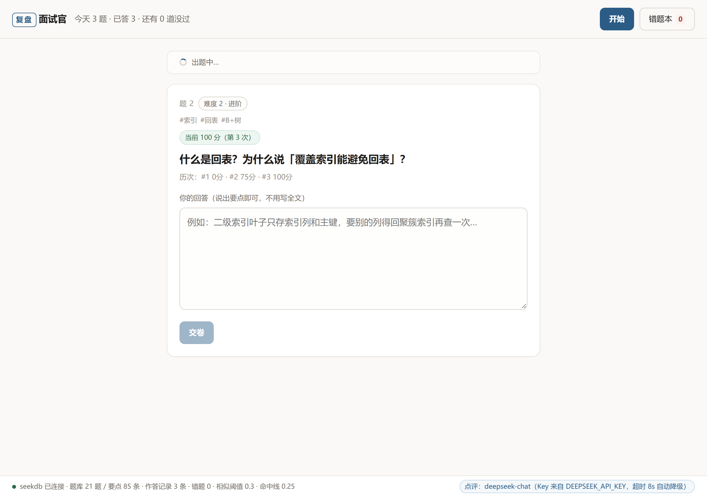

把崩过的那道题，
再问你一遍。
刷题软件只记「对没对」。它记的是你这次漏了哪几个要点， 然后从题库里挑出同一族、换了说法的题让你重练 —— 「找同类题」这一步是本地 seekdb 的中文全文检索在干活，没有它就只能随机出题。

解决什么问题
- 痛点：答完就翻篇，下次换个问法还是崩在同一个点上。没人告诉你「你这次又漏了代价那一句」。
- 做法：每次作答都记进本地库，标注答到了哪几个参考要点、漏了哪几个；下一题优先出「同族但你没练过」的。
- 为什么必须用数据库：「同族」不是标签相等，是中文术语的相似度。要同时做中文全文匹配和结构化过滤（按得分、按最近练习时间排题单），这正是 seekdb 在这里的位置。
使用效果：暂无真实用户数据（本项目在比赛周期内完成，未做过用户投放）。
seekdb 用在哪
三步里中间那步和第三步是数据库在干活，不是应用层字符串比较。
1
你交卷
把原话和当前题目一起提交，不打分、不自愈，先存下来。
浏览器 → 本地 http.server
2
写进 seekdb
逐条比对你说的话和该题的参考要点，算出得分，连同原话写进 answer_log。写成功才许进入点评。
seekdb · ref_point / answer_log
3
下次检索同类题
用这道题的术语串做中文全文匹配，召回同族题，按相对阈值剪掉噪声，再排「你还没练过的」。
seekdb · MATCH(keywords) AGAINST(…)
库里就三张表
questions
21 道题库。keywords 列建 FULLTEXT INDEX … WITH PARSER ik（中文分词）
ref_point
85 条参考答案要点，一题多行。content 列同样带 ik 全文索引
answer_log
作答历史，复合主键 (question_id, attempt_no)，同一题重答不长重复行
一个不好看的实话
seekdb 的 ik 词库里没有「回表」这类技术词，会把它切成单字「表」，
于是搜「回表」会连带召回「分库分表」的题。
本项目不假装这个问题不存在：召回后按 score >= top × 0.3 剪枝，
0.3 是拿 21 道题逐题跑出来定的。下面每条记录都能看到这条阈值在剪什么。
检索记录回放
- 引擎
- —
- 语料
- —
- 剪枝阈值
- —
- 记录条数
- —
没读到 queries.js：这个文件要和页面同目录，内联了导出记录，file:// 直接打开也能显示。
怎么在本地跑起来
五条命令，从零到能打开页面。不需要 Docker，也不需要任何模型 API（配了 Key 点评会更有针对性）。
# 1. 建虚拟环境
python -m venv .venv
# 2. 激活（Windows Git Bash；PowerShell / CMD 用对应脚本）
source .venv/Scripts/activate
# 3. 装依赖（两个包，总下载约 66 MB）
pip install pylibseekdb==1.4.0.post2 pymysql==2.2.8
# 4. 初始化数据库：建库、建表、导入题库（幂等，可以反复执行）
python db/init.py
# 5. 启动服务
python server/app.py